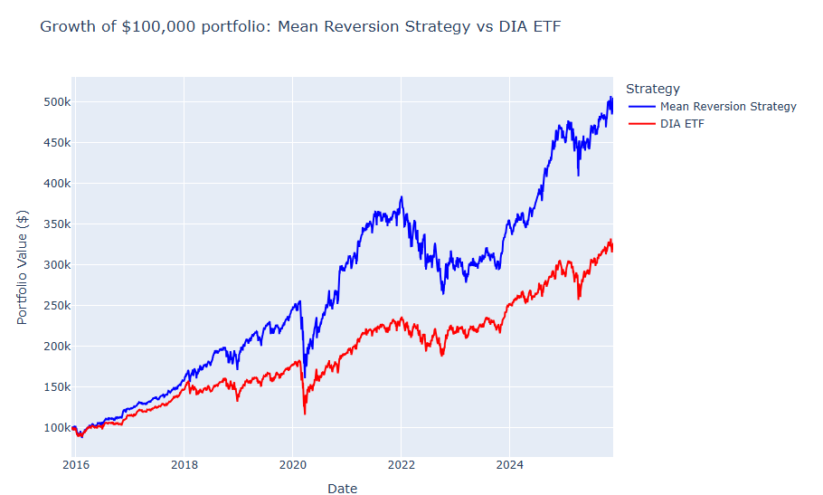

📌 Overview
This project implements a Python-based backtesting engine to evaluate a mean‑reversion strategy on
Dow Jones Industrial Average (DJIA) constituents. It automates data ingestion, portfolio construction,
performance calculation, and visualization — producing reproducible, publication‑ready outputs.
The goal is to demonstrate practical skills in financial analysis, systematic strategy design,
and data-driven evaluation.
📈 Strategy Performance
The chart below shows the growth of a $100,000 portfolio from 2016–2025. The mean‑reversion strategy
significantly outperformed the DIA ETF benchmark over the period.

📊 Key Metrics
Strategy Annualized Return Volatility Sharpe Ratio
Mean Reversion 19.77% 20.11% 0.98
DIA ETF 14.69% 17.47% 0.84
These results highlight the potential value of systematic rebalancing based on short-term price deviations.
🧠 Methodology
- Historical DJIA constituent list extracted automatically
- Daily adjusted close prices downloaded via
yfinance
- Mean‑reversion signal applied across constituents
- Equal-weighted portfolio with daily rebalancing
- Benchmark: DIA ETF
- Performance metrics: CAGR, volatility, Sharpe ratio, drawdown
🗂️ Repository Structure
stock_backtesting/
│ Backtesting Final.py
│ dow_jones_constituents.csv
│ dow_jones_data.csv
│
└── results/
└── 2025-11-29_16-01-42/
backtesting-results.png
line_chart.html
performance_metrics.csv
🚀 Run the Backtest
pip install pandas numpy matplotlib yfinance
python "Backtesting Final.py"
🔮 Future Improvements
- Factor-based strategies (value, momentum, quality)
- Transaction cost modeling
- Volatility targeting or risk parity
- Streamlit dashboard for interactive exploration
- Macro‑driven signal integration